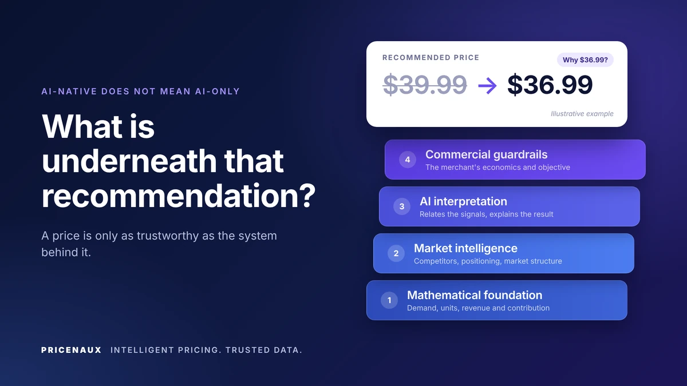
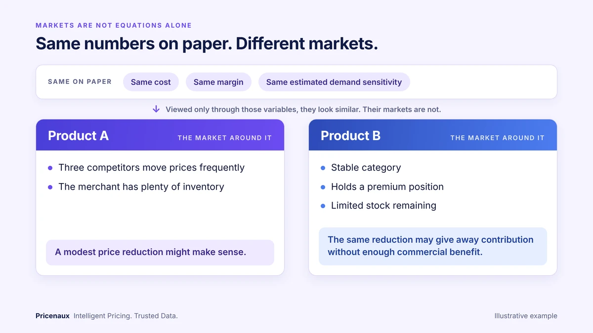
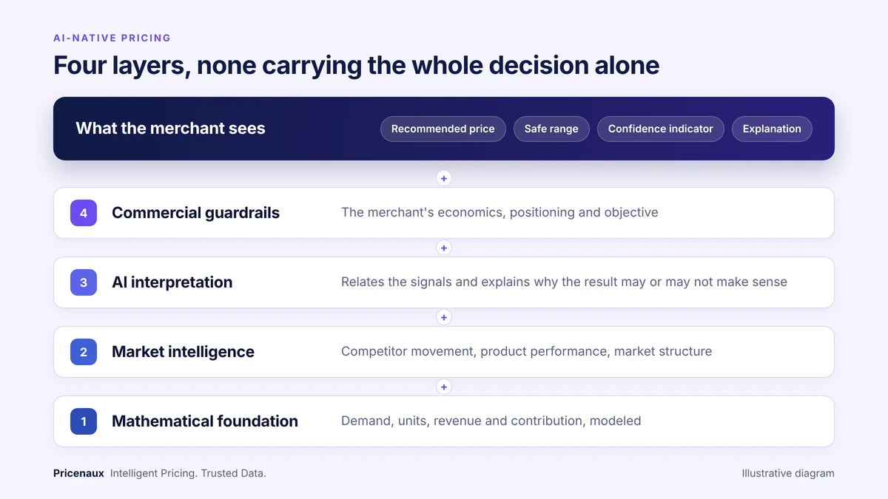
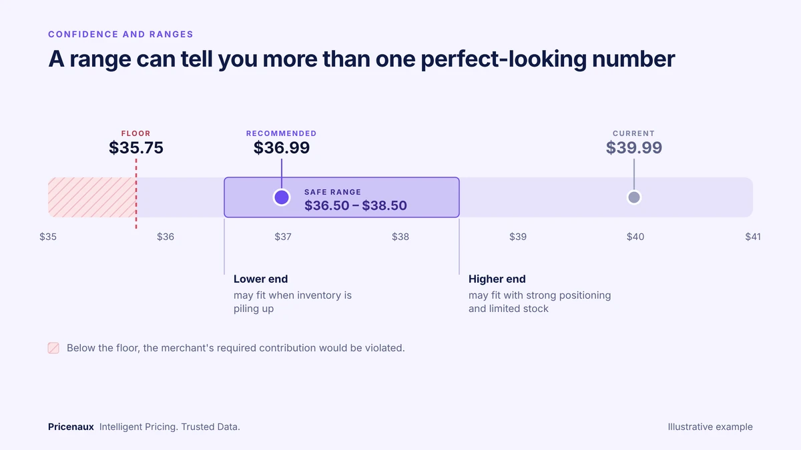
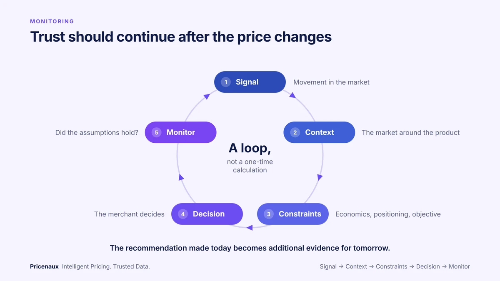
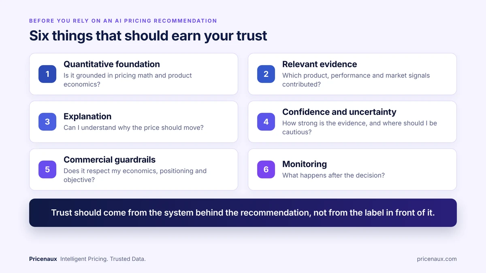

An AI pricing recommendation is only as trustworthy as the system behind it: mathematical modeling, market intelligence, AI interpretation and commercial guardrails.
Imagine your pricing system recommends moving a product from $39.99 to $36.99. (This example is illustrative.)
Would you accept it?
Maybe. But before clicking anything, I’d want to know a few things. Why $36.99? What changed? What does the product’s demand history suggest, and what happens to contribution at that price? How does the recommendation compare with the market? How strong is the evidence behind it? And what range of prices could still make commercial sense?
Those questions aren’t arguments against AI. They’re what responsible AI-assisted pricing should help answer. Because the real question isn’t “Can AI recommend a price?” It’s:
What is underneath that recommendation?
1. AI-native shouldn’t mean asking AI to guess a price
There’s a difference between using AI to generate a number and using AI as part of a pricing decision system. At Pricenaux, an AI-native recommendation doesn’t mean asking a language model, “What should this product cost?” and accepting whatever comes back.
Pricing has a quantitative foundation. Price affects demand, and demand affects units. Price, product cost, fulfillment, fees and other relevant variable costs affect contribution, which is the amount remaining after the variable costs included in the analysis. Those relationships can be modeled.
Price elasticity of demand is a standard example. OpenStax defines it using the percentage change in quantity demanded relative to the percentage change in price. Revenue-management and dynamic-pricing research has also studied for decades how businesses can make pricing decisions when demand is uncertain and commercial constraints matter.
AI should not replace the mathematics behind pricing. It should help the business interpret what those relationships mean in context.
2. The math gives the recommendation discipline
Before market interpretation enters the picture, a recommendation should be able to answer some quantitative questions. How has demand responded to price in the past? What happens to expected units, revenue and contribution if the price moves? Is there an economic threshold the price shouldn’t cross, and what range stays commercially acceptable?
Those questions shouldn’t depend on persuasive language. They need mathematics.
Pricenaux combines AI, mathematical modeling and marketplace signals to produce a recommended price, a safe range and a confidence indicator, rather than one isolated number. That matters because $36.99 means much more when you can see what sits behind it. It might be the modeled optimum under one objective, while $37.50 to $38.50 is still commercially reasonable, and $35.75 is a boundary because going lower would violate the merchant’s required contribution.
The number isn’t valuable simply because a model produced it. It becomes valuable when the quantitative relationships behind it connect to the merchant’s economics.
3. Markets aren’t equations alone
Consider two products with the same cost, the same margin and the same estimated demand sensitivity. Viewed only through those quantitative variables, they may initially look similar. Their markets may not be.
Product A faces three competitors that move prices frequently, and the merchant has plenty of inventory. Product B sits in a stable category, holds a premium position, and has limited stock remaining. A modest price reduction might make sense for Product A. For Product B, the same reduction may give away contribution without delivering enough commercial benefit. (Again, illustrative.)

Two products can look similar on paper while requiring different pricing decisions once competitive conditions, inventory and positioning are considered. Illustrative example.
That’s where market and commercial intelligence become important. Pricenaux looks beyond a product’s internal economics to signals such as competitor movement, product performance, demand sensitivity, market structure and the merchant’s guardrails. AI’s role is to help interpret how those signals relate, and to help explain why a quantitative recommendation may or may not make sense in the current market.
So a better description of AI-native pricing is:
Mathematical foundation + market intelligence + AI interpretation + commercial guardrails.

AI-native pricing does not mean AI-only. Pricenaux combines a mathematical foundation, market intelligence, AI interpretation and commercial guardrails to support explainable pricing decisions.
None of those layers should have to carry the whole decision alone.
4. A good recommendation shows its work
If a system recommends $36.99, it should be able to say why, with reasoning tied to the actual decision rather than a generic paragraph. For example: Demand appears price sensitive. Competitive pressure has increased. Your price sits above the observed market range, and the proposed price remains above your economic threshold. Now the merchant has something to evaluate.
This lines up with broader work on trustworthy AI. The U.S. National Institute of Standards and Technology identifies characteristics including validity, reliability, transparency, explainability and accountability in its AI Risk Management Framework. Its work on explainable AI argues that systems should provide evidence or reasons for their outputs, offer explanations meaningful to the intended user, and operate within appropriate knowledge limits. The OECD similarly emphasizes transparency and explainability, including meaningful information about the factors and logic behind AI-supported outcomes where appropriate.
A merchant doesn’t need to inspect every equation. But they should be able to understand what changed, what mattered, and why the recommendation followed.
5. Explanations should support trust, not manufacture it
An explanation can make a recommendation easier to understand. It doesn’t make the recommendation correct.
Research published in Nature Machine Intelligence by Mark Steyvers and colleagues found that people tended to overestimate the accuracy of large language model responses when given default explanations (Steyvers et al.). Longer explanations raised users’ confidence even when the extra length didn’t improve their ability to tell correct answers from incorrect ones. That study looked at LLM answers to general questions, not pricing recommendations, but the lesson travels. A polished paragraph can feel intelligent. A sophisticated dashboard can feel authoritative. A price shown to two decimal places can feel precise. None of those things, on their own, proves the decision underneath is strong.
The researchers also found that communicating uncertainty in a way that better reflected the model’s confidence helped narrow the gap between users’ confidence and actual model performance. That principle matters to us, and it shapes how we build: Pricenaux’s explanations are grounded in the computed numbers and the confidence behind them. The explanation should help the merchant understand the evidence. It shouldn’t stand in for it.
A convincing explanation is not the same thing as a validated recommendation.
6. Confidence and ranges should tell you something real
Imagine a recommendation comes with a High Confidence indicator. What should that mean? That the recommended price is definitely the best one? That enough supporting evidence exists? That multiple signals point the same way? That historical behavior has been fairly stable? Those are different claims, and without context, confidence is easy to misread.
Pricenaux’s confidence indicator provides additional decision context based on the workflow and available evidence. It should not automatically be read as a statistical probability that a particular price is “correct.” That distinction matters. Confidence should help a merchant judge how much scrutiny a recommendation deserves, not create artificial certainty.
When the evidence is stronger and more consistent, a recommendation may justify more reliance. When history is limited, market behavior is unusual or signals conflict, more caution may be appropriate. Sometimes the most useful output is simply:
We do not have enough evidence to justify a large move confidently.
That isn’t a weakness. It’s responsible decision intelligence.
For the same reason, a range can tell you more than one perfect-looking number. If the engine recommends $36.99 with a safe range of $36.50 to $38.50, the merchant learns that several nearby prices may remain commercially defensible. With inventory piling up, the lower end may fit the objective. With strong positioning and limited stock, the higher end may make more sense.

A recommended price is more useful when the merchant can also see the safe range, economic floor and current price around it. Illustrative example.
A good pricing system helps define the decision space. It does not pretend uncertainty away.
7. Guardrails and human judgment still matter
A mathematically attractive price can still be commercially wrong, because optimization always depends on the objective and its constraints. A merchant might care about minimum contribution, margin, inventory velocity, revenue, profit, brand positioning, competitive presence, or some mix of them. A premium brand may not want to follow every low-priced competitor, even if a volume model says that would sell more units. A merchant with limited stock has little reason to sacrifice contribution to speed up sales, while one sitting on excess inventory may choose the opposite. The commercial objective tells the system what success actually means.
There’s also an assumption, sometimes, that the most advanced AI system is the one that removes the human completely. That doesn’t necessarily follow. In a 2024 experimental study published in Computers in Human Behavior, Artur Klingbeil, Cassandra Grützner and Philipp Schreck found that participants over-relied on AI advice, following it even when it conflicted with contextual information available to them (Klingbeil et al., 2024).
That doesn’t mean AI should be removed from the process, and it certainly doesn’t mean humans always know better. The more useful approach is to combine what each does well. A system can identify demand relationships that are hard to calculate manually, monitor competitor movement across many products, and evaluate scenarios quickly. The merchant may know that a promotion starts tomorrow, that inventory won’t be replenished for six weeks, that a competitor appears to be liquidating stock, or that the brand deliberately intends to hold a premium position. Any of those can change the commercial decision.
So the workflow shouldn’t be:
AI speaks. Human obeys.
It should be closer to:
Quantify → Interpret → Explain → Decide → Monitor
Pricenaux keeps pricing changes human-approved, with merchants retaining control and oversight throughout the decision process.
8. Trust should continue after the price changes
Suppose the merchant accepts $36.99. What happened next? Did demand respond as expected? Did units increase, and did revenue move the way you hoped? What happened to contribution? Did competitors react? Did the assumptions behind the recommendation hold?
Markets change. Google Cloud’s documentation on model monitoring describes how production data can drift away from earlier patterns as behavior and operating conditions change. Ecommerce is especially dynamic: competitors move, promotions begin and end, new sellers enter, products mature, inventory changes and seasonality shifts demand.
That’s why pricing intelligence should be a loop, not a one-time calculation:
Signal → Context → Constraints → Decision → Monitor

Pricing intelligence should be a loop, not a one-time calculation. New outcomes become additional evidence for the next decision.
The recommendation made today becomes additional evidence for tomorrow.
9. So what should earn your trust?
Before relying heavily on an AI pricing recommendation, I’d want six things to be clear:
- Quantitative foundation. Is the recommendation grounded in pricing mathematics, product economics and demand relationships, rather than generated as an unsupported AI answer?
- Relevant evidence. Which product, performance and market signals contributed to the recommendation?
- Explanation. Can I understand why the system wants the price to move, and is that explanation tied to the underlying analysis?
- Confidence and uncertainty. How strong is the available evidence, and where should I be cautious?
- Commercial guardrails. Does the recommendation respect my economics, positioning and business objective?
- Monitoring. What happens after the decision, and will new evidence affect what is recommended next?

Before relying on an AI pricing recommendation, look for a quantitative foundation, relevant evidence, explanation, meaningful confidence, commercial guardrails and monitoring.
That’s a far stronger definition of trust than “The AI said $36.99.”
What this means for Pricenaux
Pricenaux is AI-native, but AI-native doesn’t mean AI-only. The engine combines mathematical modeling, product economics, demand sensitivity and marketplace signals with AI-driven interpretation and Commercial Intelligence. The objective isn’t to replace quantitative pricing methodology with generative AI. It’s to combine quantitative discipline with enough product, market and commercial context to make the recommendation more useful.
That means connecting the mathematics behind the recommendation, the market around the product, the constraints of the business, the confidence appropriate to the workflow and available evidence, and the explanation the merchant needs to act intelligently.
The output shouldn’t amount to “AI says change your price.” It should be closer to this: Here is the recommended move. Here is the evidence behind it. Here is the reasonable range. Here is the confidence information available for this workflow. Here are the relevant risks and constraints. Now you can decide how you want to act.
That distinction is fundamental to how we think about Pricing Intelligence.
A note from the founder
When people hear “AI pricing,” it’s easy to imagine a black box spitting out a number. That’s not what drew me to this problem.
Pricing has mathematics behind it. Demand has relationships that can be measured, margins and contribution can be calculated, and price scenarios can be modeled. The opportunity I see in AI isn’t to throw that foundation away. It’s to make the decision around the mathematics smarter. What’s happening in the market? Which signals matter? How does this product differ from another one? How strong is the evidence? What risk are we taking? And can we explain the recommendation clearly enough that the merchant can challenge it?
I don’t want anyone to trust a Pricenaux recommendation simply because it comes from AI. I want it to earn that trust through mathematics, evidence, context and explanation. For me, that’s a much more meaningful definition of AI-native pricing.
— Nermin Sad, CEO & Co-founder, Pricenaux
So, how much should you trust it?
Not because it carries an AI label, and not any less simply because AI is involved. Look underneath it. Is there a quantitative foundation? Are the economics visible? Does the recommendation reflect relevant market context? Can the reasoning be explained? Is uncertainty communicated appropriately? Are commercial guardrails respected? Can the decision be monitored afterward?
Because ultimately:
Trust should come from the system behind the recommendation, not from the label in front of it.
And perhaps the most important distinction is this:
AI should not replace the math behind pricing. It should help the business understand what the math means in context.
Have a perspective on this topic?
Continue the discussion with Pricenaux and other operators on LinkedIn.
Join the LinkedIn DiscussionSee what is behind your pricing decisions
Pricenaux combines mathematical modeling, marketplace signals and AI-driven Commercial Intelligence to produce explainable, margin-aware pricing guidance.
Or benchmark the maturity of your current pricing process in about two minutes: